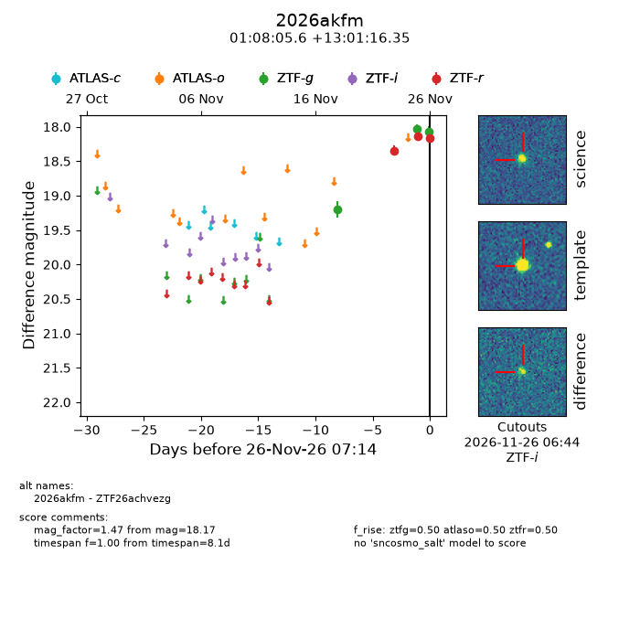
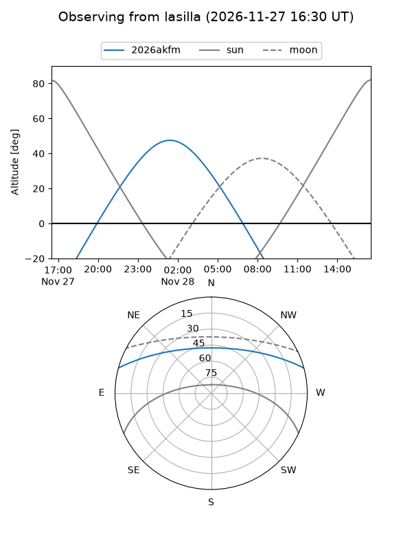
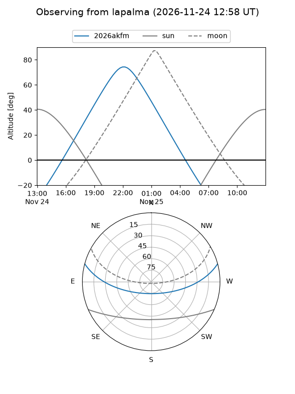
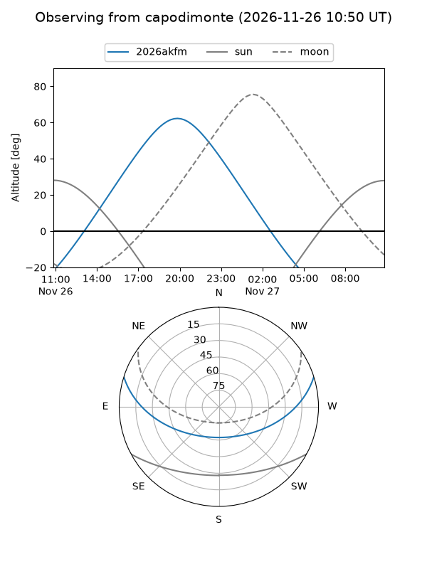

2026akfm
Target 2026akfm at 2026-11-26 07:16
Aliases and brokers:
FINK-ZTF: ztf.fink-portal.org/ZTF26achvezg
Lasair-ZTF: lasair-ztf.lsst.ac.uk/objects/ZTF26achvezg
ALeRCE-ZTF: alerce.online/object/ZTF26achvezg
YSE-PZ: ziggy.ucolick.org/yse/transient_detail/2026akfm
TNS name: wis-tns.org/object/2026akfm
Direct TNS query: direct search
alt names
ZTF26achvezg (ztf,fink_ztf)
2026akfm (tns,yse)
Coordinates:
equatorial (ra, dec) = 17.0234,+13.02121
equatorial (HMS+DMS) = 01:08:05.61,+13:01:16.35
galactic (l, b) = (129.2045,-49.64758)
Flags:
peak dt:
Photometry:
last atlaso=nan, ztfg=18.07, ztfr=18.17
1 atlaso, 3 ztfg, 3 ztfr detections
Lightcurve

Visibility



Additional plots